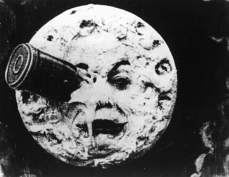

영화란 1895년 왼쪽 사진의 뤼미에르 형제(좌 : 오귀스트 뤼미에르, 우 : 루이 뤼미에르)의 '시네마토그래프', 즉 카메라와 상영기를 합쳐놓은 기계장치의 발명으로,
기록의 한 형태로서 시작되었습니다. 현재 영화의 사전적 정의는 국어사전에는 '일정한 의미를 갖고 움직이는 대상을 촬영하여 영사기로 영사막에 재현하는 종합 예술.'이고, 영어로는 'movie', 'film', 'motion picture' 프랑스어로는 'cinéma'입니다. 또한 프랑스어 'cinéma'의 첫번째 뜻은 'procédé permettant d'enregistrer des images sur un support pellicule en celluloïd', '셀룰로이드의 보조 필름에 상을 기록하는 기법', 두번째 뜻으로는 'art de réaliser des films, technique de réalisation', '영화 제작의 예술 혹은 기술'로, 영화의 범주를 굉장히 넓게 보고 있습니다. 이는 한 마디로
우리가 어느 것을 무엇을 통해 찍든 영화가 될 수 있다는 것을 뜻합니다.
산업, 그리고 예술로서의 영화

앞서 말했듯, 영화는 처음에 기록의 한 형태로 시작했습니다. 최초의 영화는 뤼미에르 형제가 1895년에 만든 <뤼미에르 공장을 나서는 노동자들, La Sortie de l'Usine Lumière à Lyon (1895)>입니다. (사실 기네스북에도 등재된, 루이 왕자의 <라운드헤이 가든 장면, Roundhay Garden Scene (1888)>이 먼저지만 상영의 의미가 없어 주로 최초의 영화라 하면 이 뤼미에르의 영화가 언급됩니다. <라운드헤이 가든 장면>은 2초의 아주 짧은 무성영화입니다.) 하지만 최초의 유료 상영, 대중들에게 공개된 영화는 <열차의 도착, L'Arrivée d'un train en gare de La Ciotat (1895)>입니다. 이는
영화가 기록의 한 방법이 아닌 산업의 한 부분으로서 성장할 수 있다는 것을 알렸습니다. 우측 사진은 <국가의 탄생, The Birth of A Nation(1915)>이라는 영화의 촬영장 사진으로, 이 영화를 감독한 D. W. 그리피스는 세계 최초의 블록버스터 감독, 할리우드의 아버지라는 명성을 얻으면서
산업으로서의 영화의 시작에 불을 지폈습니다.
1950년대 이후 할리우드의 세계 영화시장 장악으로 예술영화에 대한 재평가가 이루어졌습니다. 1920년대의 독일 표현주의 영화, 프랑스의 인상주의 영화, 194~50년대의 이탈리아의 네오 리얼리즘 영화 등 많은 영화들이 그 예술성을 인정받았습니다. 사실 영화는 1910년대부터 예술 표현의 또다른 방법으로 언급되었고, 러시아의 흑백영화들이나 살바도르 달리나 루이스 부뉘엘 같은
동시대의 예술가들, 전위주의자들이 이런 예술성을 발전시켰습니다. 유럽의 아방가르드 영화의 한 경향인 실험영화는 예술로서의 영화의 정수로서, 감독이 스스로 각본을 쓰고 영화에 등장하는 등 하나의 미술품을 그리듯 영화를 만드는 경향입니다. 이런 영화들은 비록 대중들에게 인기를 끌진 못했지만 영화계에
새로운 편집, 촬영 기법들을 가져오는 등 많은 긍정적 변화를 가져왔습니다.
상업영화는 상업적인 흥행을 목적으로 만든 영화입니다. 이는 곧 영화사나 감독(감독이 모든 제작, 투자과정을 총괄했을 경우)에게 돌아가는 금전적인 이득을 1차적 목적으로 하는 영화를 의미합니다. 상업영화를 만드는 감독들은 영화산업의 위험을 감수하고 벌어들일 수 있는 돈에 무게를 둡니다. 반면
예술영화는 그 본 목표가 단지 돈이 아닌 예술적인 가치를 목적으로 만든 영화입니다. 예술영화를 만드는 감독들은 돈 보다는 영화 안에서 표현할 수 있는 예술성을 위해 영화를 만듭니다. 상업영화라고 해도 액션씬과 선정적인 장면 같은 자극적인 요소만을 넣는 것 말고도 예술적인 장면을 충분히 만들어낼 수 있습니다. 흥행에 성공하나 그렇다고 해서 예술성을 깡그리 무시하는 영화는 없다는 것입니다. 또한 예술영화를 보았을 때, 영화는 다른 매체와는 달리 영화는 그 제작비용이 수없이도 많이 들기 때문에 예술영화라 하더라도 돈에 아주 얽매이지 않는 것이 아니므로, 어느정도 이득을 추구하게 되기 마련입니다.
따라서 우리는 상업영화와 예술영화를 구분짓지 않는, 고정된 형식이나 장르처럼 이해하지 않는 바람직한 시각으로 영화를 바라봐야 할 것입니다.
사실주의 영화와 표현주의 영화
뤼미에르 형제의 영화들은 사실을 있는 그대로 기록하는 사실주의의 영화라고 할 수 있습니다. 관객을 혼란시킬만한 편집이나 영화적 장치 없이,
그저 사실적인 영상만으로 스크린을 채웁니다. 이미지의 변형을 최소화하기 위해 촬영이나 편집에 기교를 배제하고, 고의적인 연출보다는 우연을 강조합니다. 이는 후에 다큐멘터리로 발전합니다. 1902년 마술사 조르주 멜리에스는 영화의 필름을 잘라서 이어붙임으로서 영화를 편집할 수 있다는 사실을 알아내고
이를 이용해 특수효과를 발명해냅니다. 두 필름을 겹쳐서 합성까지도 발명해낸 멜리에스는 <달나라 여행, Le voyage dans la lune (1902)>으로 전세계 최초의 SF 영화를 만듭니다. 우측 사진은 <달나라 여행>의 한 장면으로, 멜리에스는 이 장면에서 최초로 스톱모션 기법을 사용하기도 했습니다. 멜리에스의 이 영화는
표현주의 영화의 시작을 알리며 다른 많은 영화감독들에게 영감을 불러일으켜줍니다. 조르주 멜리에스는 영화가 단순한 기록을 넘어 대중에게 쾌락을 줄 수 있다는 것을 사람들에게 보여준 최초의 감독 중 한 명입니다.
멜리에스의 이런 원시적인 표현주의 영화는 후에 독일 표현주의로 발전해 예술의 한 시조로 남았고, 그의 다양한 영화적 표현 기법들은 형식주의 영화에 많은 기여를 했습니다. 현대 영화는 이제
사실주의 영화와 형식주의 영화로 나뉩니다.